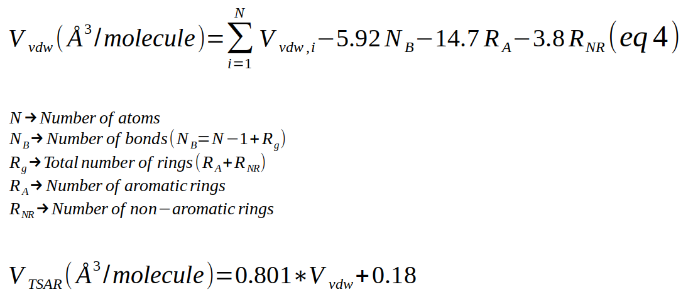
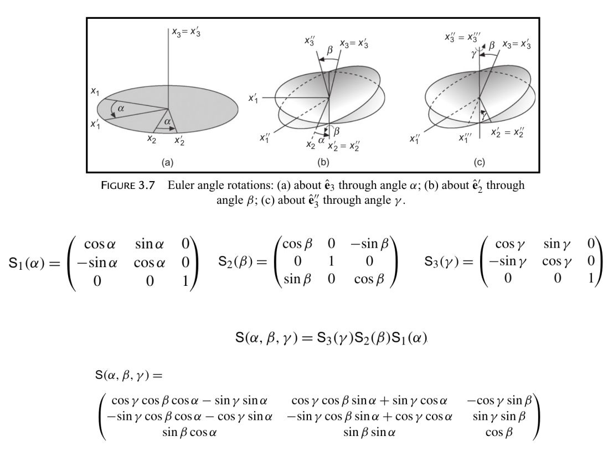
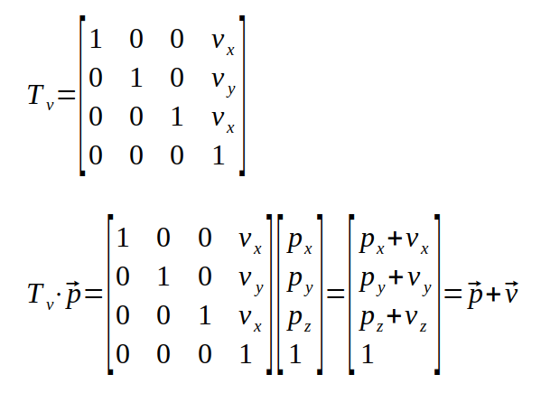

Module polyanagro.Segment
Segment representing molecules
Expand source code
"""
Segment representing molecules
"""
import os
from copy import copy
from openbabel import openbabel
import numpy as np
import logging
import polyanagro as pag
class Segment(object):
__slots__ = ['_filecoord', '_filetop', '_logger', '_typeelements', '_natoms', '_coords',
'_dummy_head_atom', '_dummy_tail_atom', '_netcharge', '_isBOassigned', '_topology', '_filetypeatoms']
# ***********************************************************************************
def __init__(self, filecoord=None, filetop=None, filetypeatoms=None, natoms=0,
xlist=[], ylist=[], zlist=[],
elementlist=[], guesstopol=True, dummy_head = -1, dummy_tail = -1):
"""
Segment constructor
Parameters:
* ``filecoord`` (string, default=None):
Name of the coordinates filecoord (Format: PDB, GRO, XYZ)
* ``filetop`` (string, default=None):
Name of the topology (Format: PDB)
* ``filetypeatoms`` (string, default=None):
Name of the file containing the matching between atoms and atomtypes. This is used mainly
to assign the reevaluated distances by Okuwaki et al. (Table 2)
* ``natoms`` (int, default = 0):
Number of atoms
* ``xlist`` (list of floats, default=[]):
x component of the coordinates (in angstroms)
* ``ylist`` (list of floats, default=[]):
y component of the coordinates (in angstroms)
* ``zlist`` (list of floats, default=[]):
z component of the coordinates (in angstroms)
* ``elementlist`` (list of strings, default=[]):
Element symbol
* ``guesstopol`` (boolean, default=True):
If True activate the guessing of topology based in a distance algorithm.
* ``dummy_head`` (integer, default=-1):
Index of the atom acting as dummy head atom to mimic polymer chain
* ``dummy_tail`` (integer, default=-1):
Index of the atom acting as dummy tail atom to mimic polymer chain
Attributes:
* ``self._filecoord``: (str) Name of the coordinates filecoord (Format: PDB, GRO, XYZ)
* ``self._filetop``: (str) Name of the topology (Format: PDB)
* ``self._logger``: (Logger) Object to throw the output
* ``self._filetypeatoms``: (str) Name of the file containing the matching between atoms and atomtypes. This is used mainly
to assign the reevaluated distances by Okuwaki et al. (Table 2)
* ``self._natoms``: (int) Number of atoms
* ``self._coords``: (ndarray, [natoms, 3]) Coordinates of the atoms
* ``self._dummy_head_atom``: (int) Index of the atom acting as dummy head atom to mimic polymer chain
* ``self._dummy_tail_atom``: (int) Index of the atom acting as dummy tail atom to mimic polymer chain
* ``self._netcharge``:(int) Net charge of the molecule
* ``self._isBOassigned``:(boolean). True if the bond order are assigned
* ``self._topology``: (Topology). Topology of the segment
Notes
-----
There are two ways to build a Segment object:
1. Segment(filecoord='ethylene.pdb')
2. Segment(natoms=2, xlist= [], ylist=[], zlist = [], elements = [])
If filecoord is present the other parameters are ignored. Otherwise, all parameters must be consistent.
if filetypeatoms is present, the types assignation is done.
The order of the atoms must be the same that the order in the coord and topology files.
The format of this file must be the following:
Data
----
<Number> <Atom> <type_of_atom>
1 C c3
2 C c3
3 C c3
(...)
14 H hc
.. warning::
Be careful when use np.transpose function. This function seems to change the order of the array to
"Fortran-type" instead to C-Order. If use np.transpose you will use np.ascontiguousarray
Example:
a = np.tranpose(b) --> a in Fortran order irrespective of the order of C
a = np.ascontiguousarray(np.transpose(b)) --> a in C order
This issue is important when use mode="c" in pyx files for Cython
.. warning::
For big molecules (>1000 atoms) deactivate the guessing of topology (guesstopol=False)
"""
self._filecoord = filecoord
self._filetop = filetop
self._logger = logging.getLogger("Output") #""Segment", append=True, )
self._typeelements = None
if filecoord is not None:
_elements = self.load_from_disk(filecoord)
else:
self._natoms = natoms
self._coords = np.column_stack((np.asarray(xlist),
np.asarray(ylist),
np.asarray(zlist)))
_elements = np.asarray(elementlist, dtype=np.str)
self.check_parameter_consistence()
self._dummy_head_atom = dummy_head
self._dummy_tail_atom = dummy_tail
self._netcharge = 0
self._isBOassigned = False
# Setup topology of the segment
if guesstopol:
if filecoord is None and filetop is None:
#self._topology = None
self._topology = pag.Topology(natoms=self._natoms)
if self._natoms == 0:
self._topology = None
else:
self._topology.guess_bonds_topology(self._coords, _elements)
self._topology._topologyfile = None
elif filetop is None:
self._topology = pag.Topology(natoms=self._natoms)
self._topology.guess_bonds_topology(self._coords, _elements)
self._topology._topologyfile = None
else:
self.set_topology_from_disk(filetop, _elements)
else:
self._topology = None
self._filetypeatoms = filetypeatoms
if filetypeatoms is not None:
self.set_typeatoms(filetypeatoms)
# ***********************************************************************************
def __str__(self):
""" Returns the state of the attributtes of an instance"""
objstr = str(self.__repr__())+"\n"
for key in self.__dict__:
try:
value = getattr(self,key)
objstr += str(key) +": "+str(value) + "\n"
except AttributeError:
objstr += str(key) +": NOT SET" + "\n"
return objstr
# ***********************************************************************************
def __copy__(self):
s = Segment(guesstopol=False)
s._natoms = self._natoms
s._topology = copy(self._topology)
s._coords = self._coords.copy()
s._filecoord = self._filecoord
s._filetop = self._filetop
s._filetypeatoms = self._filetypeatoms
if self._typeelements is not None:
s._typeelements = self._typeelements.copy()
return s
# ***********************************************************************************
def __eq__(self, other):
if other is None:
return None
res = True
keys = self.__slots__
for key in keys:
if isinstance(getattr(self,key), np.ndarray):
par = np.array_equal(getattr(self,key), getattr(other,key))
res = res and par
elif isinstance(getattr(self,key),pag.Topology):
par = getattr(self,key) == getattr(other,key)
res = res and par
elif isinstance(getattr(self,key),Segment):
par = self.__dict__[key] == other.__dict__[key]
res = res and par
else:
par = getattr(self,key) == getattr(other,key)
res = res and par
return res
# ***********************************************************************************
def check_parameter_consistence(self):
"""
Checks the length of the parameters passed through the constructor.
The length of the x, y, z and element arrays must be equal to the number ot atoms.
If there is not consistency raises a ValueError otherwise return True.
Return:
* ``None``
"""
condition = (self._coords.shape[0] == self._natoms)
if not condition:
line = "\n\t======== ERROR ==========\n" \
"\tCoordinates arrays must have equal length and equal to number of atoms\n" \
"\tLength coords: %d\n" \
"\tLength Elements: %d\n"\
"\tNumber of atoms: %d\n" \
"\tCoordfile: %s\n" \
"\tTopofile: %s\n" \
"\t======== ERROR ==========\n"%(self._coords.shape[0] , len(self._elements), self._natoms, self._filecoord, self._filetop)
#print(line)
self._logger.error(line)
raise ValueError ("Coordinates arrays must have equal length and equal to number of atoms")
return None
# ***********************************************************************************
def load_from_disk(self, path):
"""
Wrapper function to read information about the segment as a function of the extension of the file.
If the extesion is unkwown the function raises an error.
Parameters:
* ``path`` (string): Path to the file in the disk
Return:
* ``elements`` (list): list of elements. Example (['C','C'])
Example
-------
>>> s1.load_from_disk('../data/pe_1mon_ua.pdb')
"""
ext = os.path.splitext (path)[1]
if ext == ".pdb":
elements = self.read_pdb_from_scratch(path)
elif ext == '.xyz':
elements = self.read_xyz_from_scratch (path)
elif ext == '.gro':
elements = self.read_gro_from_scratch(path)
# elif ext == ".sdf":
# self.read_sdf_coordtopo_from_scratch(path)
else:
self.printerror ("Unkown molecular format for file: %s" % path)
raise Exception("Unkown molecular format for file: %s"%path)
return elements
# ***********************************************************************************
def set_topology_from_disk(self, path, elements):
"""
Wrapper function to read information of the segment topology as a function of the extension of the file.
If the extesion is unkwown the function raises an error.
Parameters:
* ``path`` (string): path to the file in the disk
* ``elements`` (list): list of elements. Example (['C','C'])
Return:
* ``None``
Example
-------
>>> s1.set_topology_from_disk('../data/pe_1mon_ua.pdb', ['C','C'])
"""
ext = os.path.splitext (path)[1]
if ext == ".pdb":
self._topology = pag.Topology(natoms=self._natoms)
self.read_topology_from_pdb(path, elements)
elif ext == ".xyz":
self._topology = pag.Topology(natoms=self._natoms)
self.read_topology_from_xyz(path)
elif ext == ".sdf":
"The topology is already set up in the " \
"read_sdf_coordtopo_from_scratch method"
pass
else:
self.printerror ("Unknown topology format for file: %s" % path)
raise Exception("Unknown topology format for file: %s"%path)
# ***********************************************************************************
def read_pdb_from_scratch(self, pdb_path):
"""
Read data of the segment from a pdb file
(http://www.wwpdb.org/documentation/file-format-content/format33/v3.3.html)
Parameters:
* ``pdb_path`` (string): Path to a pdb file
Return:
* ``elements`` (list): list of elements. Example (['C','C'])
"""
if os.path.isfile(pdb_path):
f = open(pdb_path)
else:
self.printerror(msg1="PDB file must exist\n {} does not exist".format(pdb_path))
raise Exception('chipar.segment.read_pdb_from_scratch requires an existing file as argument: {}'.format(pdb_path))
self._natoms = 0
xlist = []
ylist = []
zlist = []
elist = []
for line in f:
if line.startswith('ATOM') or line.startswith('HETATM'):
#tag = int(line[6:11].strip())
name = line[12:16].strip()
#resname = line[17:20].strip()
#chainid = line[21]
#resid = line[22:26].strip()
x = float(line[30:38].strip())
y = float(line[38:46].strip())
z = float(line[46:54].strip())
elem = line[76:78].strip()
if elem == "":
elist.append(name.capitalize())
else:
elist.append(elem.capitalize())
xlist.append(x)
ylist.append(y)
zlist.append(z)
self._natoms += 1
self._coords = np.column_stack((np.asarray(xlist),
np.asarray(ylist),
np.asarray(zlist)))
elements = np.asarray(elist, dtype=np.str)
f.close()
return elements
# ***********************************************************************************
def read_xyz_from_scratch(self, xyz_path):
"""
Read data of the segment from a xyz file
(https://openbabel.org/docs/dev/FileFormats/XYZ_cartesian_coordinates_format.html)
Parameters:
* ``xyz_path`` (string): Path to a xyz file
Return:
* ``elements`` (list): list of elements. Example (['C','C'])
"""
if os.path.isfile(xyz_path):
f = open(xyz_path)
else:
self.printerror(msg1="XYZ file must be provided")
raise Exception('chipar.segment.read_xyz_from_scratch requires an existing file as argument')
nparticles = int(f.readline().strip())
self._natoms = 0
xlist = []
ylist = []
zlist = []
elist = []
f.readline().strip()
for _ in range(nparticles):
elem, x, y, z = f.readline().split()
xlist.append(float(x))
ylist.append(float(y))
zlist.append(float(z))
elist.append(elem.capitalize())
self._natoms += 1
self._coords = np.column_stack((np.asarray(xlist),
np.asarray(ylist),
np.asarray(zlist)))
elements = np.asarray(elist, dtype=np.str)
assert int(nparticles == self._natoms), \
"Number of particles in the header is different to the read atoms in the xyz file"
f.close()
return elements
# ***********************************************************************************
def read_gro_from_scratch(self, gro_path):
"""
Read data of the segment from a gro file
(http://manual.gromacs.org/archive/5.0.4/online/gro.html)
Parameters:
* ``gro_path`` (string): Path to a gro file
Return:
* ``elements`` (list): list of elements. Example (['C','C'])
"""
if os.path.isfile(gro_path):
f = open(gro_path)
else:
self.printerror(msg1="GRO file must be provided")
raise Exception('chipar.segment.read_gro_from_scratch requires an existing file as argument')
f.readline().strip()
self._natoms = int(f.readline().strip())
iline = 1
#chainid = 1
xlist = []
ylist = []
zlist = []
elist = []
while iline <= self._natoms:
line = f.readline()
#resid = int(line[0:5].strip())
#resname = line[5:10].strip()
atomname = line[10:15] #force field name
#tag = int(line[15:20].strip())
xlist.append(float(line[20:28].strip())*10)
ylist.append(float(line[28:36].strip())*10)
zlist.append(float(line[36:44].strip())*10)
elist.append(atomname.strip())
iline += 1
self._coords = np.column_stack((np.asarray(xlist),
np.asarray(ylist),
np.asarray(zlist)))
elements = np.asarray(elist, dtype=np.str)
f.close()
return elements
# # ***********************************************************************************
# def read_sdf_coordtopo_from_scratch(self, sdf_path):
#
# if os.path.isfile(sdf_path):
# f = open(sdf_path)
# else:
# self.printerror(msg1="SDF file must be provided")
# raise Exception('chipar.segment.read_sdf_coordtopo_from_scratch requires an existing file as argument')
#
# try:
# for n in range(3):
# next(f)
# except StopIteration:
# raise PysimmError('pysimm.system.read_mol requires either '
# 'file or string as argument')
# version = None
# line = next(f)
# self._natoms = int(line.split()[0])
# nbonds = int(line.split()[1])
# if len(line.split()) >= 3:
# version = line.split()[-1]
#
# self._topology = Topology(nvert=self._natoms)
#
# xlist = []
# ylist = []
# zlist = []
# elist = []
# if version == 'V2000':
# for iatom in range(self._natoms):
# line = next(f)
# x, y, z, elem, tmp, charge = line.split()[:6]
# xlist.append(float(x))
# ylist.append(float(y))
# zlist.append(float(z))
# elist.append(elem)
#
# for n in range(nbonds):
# line = next(f)
# iatom, jatom, order = list(map(int, line.split()[:3]))
# self._topology.add_edge([iatom-1, jatom-1])
# self._topology._orderbonds[iatom-1, jatom-1] = order
# self._topology._orderbonds[jatom-1, iatom-1] = order
#
# elif version == 'V3000':
# next(f)
# line = next(f)
# self._natoms = int(line.split()[0])
# nbonds = int(line.split()[1])
# next(f)
# for iatom in range(self._natoms):
# line = next(f)
# idf, elem, x, y, z, charge = line.split()[2:8]
# xlist.append(x)
# ylist.append(y)
# zlist.append(z)
# elist.append(elem)
#
# next(f)
# next(f)
#
# for n in range(nbonds):
# line = next(f)
# idf, order, iatom, jatom = list(map(int, line.split()[2:6]))
# self.add_edge([iatom-1, jatom-1])
# self._orderbonds[iatom-1, jatom-1] = order
# self._orderbonds[jatom-1, iatom-1] = order
#
# self._coords = np.column_stack((np.asarray(xlist),
# np.asarray(ylist),
# np.asarray(zlist)))
# self._elements = np.asarray(elist, dtype=np.str)
#
# f.close()
# ***********************************************************************************
def printerror(self, msg1):
self._logger.error(msg1)
# ***********************************************************************************
def read_topology_from_pdb(self, path, elements):
"""
Try to set up the topology reading a PDB file. The "CONECT" section is
used to yield the connectivity of the molecule, if present. Otherwise, the
bonds are guessed.
Parameters:
* ``path`` (string): Path to the PDB file
* ``elements`` (list): list of elements. Example (['C','C'])
Return:
* ``None``
"""
if os.path.isfile(path):
f = open(path)
else:
self.printerror(msg1="PDB file for topology must be provided")
raise Exception('chipar.segment.read_topology_from_pdb requires an existing file as argument')
self._topology._topologyfile = path
isthereconnect = False
for line in f:
if line.startswith('CONECT'):
l = line.split()
i = int(l[1])
self._topology.add_vertex(i-1)
for jj in l[2:]:
j = int(jj)
if j < i: continue
self._topology.add_vertex(j-1)
self._topology.add_edge([i-1,j-1])
isthereconnect = True
elif line.startswith('ATOM') or line.startswith("HETATM"):
e = line[76:78].replace(" ", "")
self._topology._charge.append(0.0)
self._topology._elements.append(e)
m = pag.atomic_data.atomic_mass[e]
self._topology._mass.append(m)
if not isthereconnect:
self._topology.guess_bonds_topology(self._coords, elements)
self._topology.perception_rings()
f.close()
# DEBUG
# print (self._topology)
# self._topology.draw_graph(title="kk")
# ***********************************************************************************
def read_topology_from_xyz(self, path):
"""
Try to set up the topology reading a PDB file. The "CONECT" section is
used to yield the connectivity of the molecule, if present. Otherwise, the
bonds are guessed.
Parameters:
* ``path`` (string): Path to the PDB file
Return:
* ``None``
"""
if os.path.isfile(path):
f = open(path)
else:
self.printerror(msg1="PDB file for topology must be provided")
raise Exception('chipar.segment.read_topology_from_pdb requires an existing file as argument')
isthereconnect = False
if not isthereconnect:
self._topology.guess_bonds(self._coords, self._elements)
f.close()
# DEBUG
# print (self._topology)
# self._topology.draw_graph(title="kk")
# ***********************************************************************************
def get_coords(self, atomlist = None):
"""
Get the coordinates of the atomlist. It the atomlist is None, it return all coordinates
Parameters:
* ``atomlist`` (list, default=None): list of index number
Return:
* ``tmp_coords` (ndarray (float64) [#ofatoms in atomlist or self._natoms,3]) : Coordinates
Example
-------
>>> s1.get_coords()
>>> s1.get_coords(atomlist=[0,2])
... atom0 -> [ 0.000, 0.765, 0.000]
... atom2 -> [ 0.513, 1.165, -0.887]
"""
if atomlist is None:
return self._coords
else:
tmp_coords = np.zeros((len(atomlist),3))
i = 0
for item in atomlist:
tmp_coords[i] = self._coords[item]
i += 1
return tmp_coords
# ***********************************************************************************
def center_of_mass(self):
"""
Calculate the center of mass of the current coordinates
Parameters:
* ``None``
Return:
* ``com`` (type: ndarray vector) : Coordinates of the center of mass
"""
mtotal = 0.0
tmp = np.zeros(3)
c = self.get_coords()
for iatom in range(self._natoms):
m = pag.atomic_mass[self._topology._elements[iatom]]
mtotal += m
tmp += c[iatom,:]*m
com = tmp/mtotal
return com
# ***********************************************************************************
def center_of_geom(self):
"""
Calculate the center of geometry of the current coordinates
Parameters:
* ``None``
Return:
* ``cog`` (type: ndarray vector) : Coordinates of the geometry center
"""
tmp = np.zeros(3)
c = self.get_coords()
for iatom in range(self._natoms):
tmp += c[iatom,:]
cog = tmp/self._natoms
return cog
# ***********************************************************************************
def translate_vector(self, v):
"""
Translate the segment along the vector v.
This function changes the coordinates of the segment
.. image:: ../../figures/translation.png
The vector p represents the coordinates of each atom.
Parameters:
* ``v`` (list or (1,3)-ndarray): A vector to translate the coordinates
Return:
* ``None``
Examples
--------
Coordinates before change
-------------------------
[[-0.226 0.058 0.022],
[-0.341 1.094 0.372],
[-0.741 -0.592 0.743],
[-0.756 -0.027 -0.937],
[ 1.257 -0.325 -0.12 ],
[ 1.372 -1.361 -0.47 ],
[ 1.773 0.325 -0.841],
[ 1.773 -0.242 0.814],
[ 2.8 -0.515 0.682],
[ 1.32 -0.895 1.532],
[ 1.713 0.766 1.165]]
>>> com = [ 0.92694264 -0.16617864 0.24637543]
... s1.translate_vector(-com)
Coordinates after change
-------------------------
[[-1.15294264 0.22417864 -0.22437543],
[-1.26794264 1.26017864 0.12562457],
[-1.66794264 -0.42582136 0.49662457],
[-1.68294264 0.13917864 -1.18337543],
[ 0.33005736 -0.15882136 -0.36637543],
[ 0.44505736 -1.19482136 -0.71637543],
[ 0.84605736 0.49117 -1.08738 ],
[0.84605736 -0.07582 0.56762 ],
[1.87396 -0.34882 0.43562 ],
[0.39306 -0.72882 1.28562 ],
[0.78606 0.93218 0.91862 ]]
"""
c = self.get_coords()
for iatom in range(self._natoms):
c[iatom,:] += v
return None
# ***********************************************************************************
def euler_orientation(self, iseed=None):
"""
New coordinates of the atoms accordingly to random Euler angles.
There are many definitions of the Euler angles
(see: https://en.wikipedia.org/wiki/Euler_angles)
The definition here used is that given in:
.. Data::
MATHEMATICAL METHODS FOR PHYSICISTS
SEVENTH EDITION
George B. Arfken, Hans J. Weber, Frank E. Harris
pag: 140-142
.. image:: ../../figures/euler_book.png
Parameters:
* ``iseed`` (integer, default=None): seed for the random number generator
Return:
* ``euler``(list) : Euler angles [alpha, beta, gamma] in radians
"""
# Generate euler angles ========
if iseed is None:
euler = pag.generate_random_euler_angles()
else:
euler = pag.generate_random_euler_angles(seed=iseed)
# Create rotation matrix
S = pag.euler_rotation_matrix(euler)
# Take the transpose of the coordinates
C = np.ascontiguousarray(np.transpose(self.get_coords()))
# Change the coordinates (R) dot-product (column vector of the coordinates)
#print(ref.flags)
self._coords = np.ascontiguousarray(np.transpose(np.dot(S,C)))
return euler
# ***********************************************************************************
def calc_vdw_volume_VABC(self):
"""
Calculation of the van der waals volume using the method reported by Zhao et al.
"Fast Calculation of van der Waals Volume as a Sum of Atomic and
Bond Contributions and Its Application to Drug Compounds", J. Org. Chem. 2003, 68, 7368-7373
The VdW radii and volume are taken from
element_vdw_vmd_radius_bondi and element_vdw_vmd_volume_bondi, respectively.
The formula (4) of the article will be used in this function:
.. image:: ../../figures/volume_vdw.png
Parameters:
* ``None
Return:
* ``volume_vdw``: Van der waals volume using equation 4 in (angstroms^3/molecule)
* ``volume_tsar``: Van der waals volume using equation 6 in (angstroms^3/molecule)
"""
s1 = 0.0
for iatom in self._topology._elements:
s1 += pag.element_vdw_vmd_volume_bondi[iatom]
mol = openbabel.OBMol()
obConversion = openbabel.OBConversion()
obConversion.SetInAndOutFormats("pdb", "fix")
obConversion.ReadFile(mol, self._filecoord)
Rg = len(mol.GetSSSR())
RA = sum([ 1 for i in mol.GetSSSR() if i.IsAromatic() is True])
RNR = Rg - RA
NB = self._natoms - 1 + Rg
volume_vdw = s1 - 5.92*NB -14.7*RA -3.8*RNR
volume_tsar = 0.801*volume_vdw + 0.18
return volume_vdw, volume_tsar
# ***********************************************************************************
def set_netcharge(self, netcharge):
"""
Set the net charge of the segment
Parameters:
* ``netcharge`` (integer): Net charge of the segment
Return:
* ``None``
Example
-------
>>> s1.netcharge(-1)
"""
self._charge = netcharge
# ***********************************************************************************
def set_typeatoms(self, filetypeatoms):
"""
Set the typeatoms of the segment. The filetypeatoms must have the following format:
Data
----
<Number> <Atom> <type_of_atom>
1 C c3
2 C c3
3 C c3
(...)
14 H hc
Parameters:
* ``filetypeatoms`` (integer) : Name of the file containing the fileatom array
Return:
* ``None``
Example
-------
>>> s1.set_typeatoms("../data/n-hexane_types.dat")
n-hexane_types.dat
------------------
1 C c3
2 C c3
3 C c3
4 H hc
5 H hc
6 H hc
7 H hc
8 H hc
9 H hc
10 H hc
11 C c3
12 C c3
13 C c3
14 H hc
15 H hc
16 H hc
17 H hc
18 H hc
19 H hc
20 H hc
"""
typelist = []
with open(filetypeatoms, 'r') as f:
for line in f:
i, el, typ = line.split()
typelist.append(typ)
self._typeelements = np.asarray(typelist, dtype=np.str)
return NoneClasses
class Segment (filecoord=None, filetop=None, filetypeatoms=None, natoms=0, xlist=[], ylist=[], zlist=[], elementlist=[], guesstopol=True, dummy_head=-1, dummy_tail=-1)-
Segment constructor
Parameters
filecoord(string, default=None): Name of the coordinates filecoord (Format: PDB, GRO, XYZ)filetop(string, default=None): Name of the topology (Format: PDB)filetypeatoms(string, default=None): Name of the file containing the matching between atoms and atomtypes. This is used mainly to assign the reevaluated distances by Okuwaki et al. (Table 2)natoms(int, default = 0): Number of atomsxlist(list of floats, default=[]): x component of the coordinates (in angstroms)ylist(list of floats, default=[]): y component of the coordinates (in angstroms)zlist(list of floats, default=[]): z component of the coordinates (in angstroms)elementlist(list of strings, default=[]): Element symbolguesstopol(boolean, default=True): If True activate the guessing of topology based in a distance algorithm.dummy_head(integer, default=-1): Index of the atom acting as dummy head atom to mimic polymer chaindummy_tail(integer, default=-1): Index of the atom acting as dummy tail atom to mimic polymer chain
Attributes
self._filecoord: (str) Name of the coordinates filecoord (Format: PDB, GRO, XYZ)self._filetop: (str) Name of the topology (Format: PDB)self._logger: (Logger) Object to throw the outputself._filetypeatoms: (str) Name of the file containing the matching between atoms and atomtypes. This is used mainly to assign the reevaluated distances by Okuwaki et al. (Table 2)self._natoms: (int) Number of atomsself._coords: (ndarray, [natoms, 3]) Coordinates of the atomsself._dummy_head_atom: (int) Index of the atom acting as dummy head atom to mimic polymer chainself._dummy_tail_atom: (int) Index of the atom acting as dummy tail atom to mimic polymer chainself._netcharge:(int) Net charge of the moleculeself._isBOassigned:(boolean). True if the bond order are assignedself._topology: (Topology). Topology of the segment Notes
There are two ways to build a Segment object: 1. Segment(filecoord='ethylene.pdb') 2. Segment(natoms=2, xlist= [], ylist=[], zlist = [], elements = [])
If filecoord is present the other parameters are ignored. Otherwise, all parameters must be consistent.
if filetypeatoms is present, the types assignation is done. The order of the atoms must be the same that the order in the coord and topology files. The format of this file must be the following:
Data
<Number> <Atom> <type_of_atom> 1 C c3 2 C c3 3 C c3 (...) 14 H hcWarning
Be careful when use np.transpose function. This function seems to change the order of the array to "Fortran-type" instead to C-Order. If use np.transpose you will use np.ascontiguousarray
Example: a = np.tranpose(b) --> a in Fortran order irrespective of the order of C a = np.ascontiguousarray(np.transpose(b)) --> a in C order This issue is important when use mode="c" in pyx files for CythonWarning
For big molecules (>1000 atoms) deactivate the guessing of topology (guesstopol=False)
Expand source code
class Segment(object): __slots__ = ['_filecoord', '_filetop', '_logger', '_typeelements', '_natoms', '_coords', '_dummy_head_atom', '_dummy_tail_atom', '_netcharge', '_isBOassigned', '_topology', '_filetypeatoms'] # *********************************************************************************** def __init__(self, filecoord=None, filetop=None, filetypeatoms=None, natoms=0, xlist=[], ylist=[], zlist=[], elementlist=[], guesstopol=True, dummy_head = -1, dummy_tail = -1): """ Segment constructor Parameters: * ``filecoord`` (string, default=None): Name of the coordinates filecoord (Format: PDB, GRO, XYZ) * ``filetop`` (string, default=None): Name of the topology (Format: PDB) * ``filetypeatoms`` (string, default=None): Name of the file containing the matching between atoms and atomtypes. This is used mainly to assign the reevaluated distances by Okuwaki et al. (Table 2) * ``natoms`` (int, default = 0): Number of atoms * ``xlist`` (list of floats, default=[]): x component of the coordinates (in angstroms) * ``ylist`` (list of floats, default=[]): y component of the coordinates (in angstroms) * ``zlist`` (list of floats, default=[]): z component of the coordinates (in angstroms) * ``elementlist`` (list of strings, default=[]): Element symbol * ``guesstopol`` (boolean, default=True): If True activate the guessing of topology based in a distance algorithm. * ``dummy_head`` (integer, default=-1): Index of the atom acting as dummy head atom to mimic polymer chain * ``dummy_tail`` (integer, default=-1): Index of the atom acting as dummy tail atom to mimic polymer chain Attributes: * ``self._filecoord``: (str) Name of the coordinates filecoord (Format: PDB, GRO, XYZ) * ``self._filetop``: (str) Name of the topology (Format: PDB) * ``self._logger``: (Logger) Object to throw the output * ``self._filetypeatoms``: (str) Name of the file containing the matching between atoms and atomtypes. This is used mainly to assign the reevaluated distances by Okuwaki et al. (Table 2) * ``self._natoms``: (int) Number of atoms * ``self._coords``: (ndarray, [natoms, 3]) Coordinates of the atoms * ``self._dummy_head_atom``: (int) Index of the atom acting as dummy head atom to mimic polymer chain * ``self._dummy_tail_atom``: (int) Index of the atom acting as dummy tail atom to mimic polymer chain * ``self._netcharge``:(int) Net charge of the molecule * ``self._isBOassigned``:(boolean). True if the bond order are assigned * ``self._topology``: (Topology). Topology of the segment Notes ----- There are two ways to build a Segment object: 1. Segment(filecoord='ethylene.pdb') 2. Segment(natoms=2, xlist= [], ylist=[], zlist = [], elements = []) If filecoord is present the other parameters are ignored. Otherwise, all parameters must be consistent. if filetypeatoms is present, the types assignation is done. The order of the atoms must be the same that the order in the coord and topology files. The format of this file must be the following: Data ---- <Number> <Atom> <type_of_atom> 1 C c3 2 C c3 3 C c3 (...) 14 H hc .. warning:: Be careful when use np.transpose function. This function seems to change the order of the array to "Fortran-type" instead to C-Order. If use np.transpose you will use np.ascontiguousarray Example: a = np.tranpose(b) --> a in Fortran order irrespective of the order of C a = np.ascontiguousarray(np.transpose(b)) --> a in C order This issue is important when use mode="c" in pyx files for Cython .. warning:: For big molecules (>1000 atoms) deactivate the guessing of topology (guesstopol=False) """ self._filecoord = filecoord self._filetop = filetop self._logger = logging.getLogger("Output") #""Segment", append=True, ) self._typeelements = None if filecoord is not None: _elements = self.load_from_disk(filecoord) else: self._natoms = natoms self._coords = np.column_stack((np.asarray(xlist), np.asarray(ylist), np.asarray(zlist))) _elements = np.asarray(elementlist, dtype=np.str) self.check_parameter_consistence() self._dummy_head_atom = dummy_head self._dummy_tail_atom = dummy_tail self._netcharge = 0 self._isBOassigned = False # Setup topology of the segment if guesstopol: if filecoord is None and filetop is None: #self._topology = None self._topology = pag.Topology(natoms=self._natoms) if self._natoms == 0: self._topology = None else: self._topology.guess_bonds_topology(self._coords, _elements) self._topology._topologyfile = None elif filetop is None: self._topology = pag.Topology(natoms=self._natoms) self._topology.guess_bonds_topology(self._coords, _elements) self._topology._topologyfile = None else: self.set_topology_from_disk(filetop, _elements) else: self._topology = None self._filetypeatoms = filetypeatoms if filetypeatoms is not None: self.set_typeatoms(filetypeatoms) # *********************************************************************************** def __str__(self): """ Returns the state of the attributtes of an instance""" objstr = str(self.__repr__())+"\n" for key in self.__dict__: try: value = getattr(self,key) objstr += str(key) +": "+str(value) + "\n" except AttributeError: objstr += str(key) +": NOT SET" + "\n" return objstr # *********************************************************************************** def __copy__(self): s = Segment(guesstopol=False) s._natoms = self._natoms s._topology = copy(self._topology) s._coords = self._coords.copy() s._filecoord = self._filecoord s._filetop = self._filetop s._filetypeatoms = self._filetypeatoms if self._typeelements is not None: s._typeelements = self._typeelements.copy() return s # *********************************************************************************** def __eq__(self, other): if other is None: return None res = True keys = self.__slots__ for key in keys: if isinstance(getattr(self,key), np.ndarray): par = np.array_equal(getattr(self,key), getattr(other,key)) res = res and par elif isinstance(getattr(self,key),pag.Topology): par = getattr(self,key) == getattr(other,key) res = res and par elif isinstance(getattr(self,key),Segment): par = self.__dict__[key] == other.__dict__[key] res = res and par else: par = getattr(self,key) == getattr(other,key) res = res and par return res # *********************************************************************************** def check_parameter_consistence(self): """ Checks the length of the parameters passed through the constructor. The length of the x, y, z and element arrays must be equal to the number ot atoms. If there is not consistency raises a ValueError otherwise return True. Return: * ``None`` """ condition = (self._coords.shape[0] == self._natoms) if not condition: line = "\n\t======== ERROR ==========\n" \ "\tCoordinates arrays must have equal length and equal to number of atoms\n" \ "\tLength coords: %d\n" \ "\tLength Elements: %d\n"\ "\tNumber of atoms: %d\n" \ "\tCoordfile: %s\n" \ "\tTopofile: %s\n" \ "\t======== ERROR ==========\n"%(self._coords.shape[0] , len(self._elements), self._natoms, self._filecoord, self._filetop) #print(line) self._logger.error(line) raise ValueError ("Coordinates arrays must have equal length and equal to number of atoms") return None # *********************************************************************************** def load_from_disk(self, path): """ Wrapper function to read information about the segment as a function of the extension of the file. If the extesion is unkwown the function raises an error. Parameters: * ``path`` (string): Path to the file in the disk Return: * ``elements`` (list): list of elements. Example (['C','C']) Example ------- >>> s1.load_from_disk('../data/pe_1mon_ua.pdb') """ ext = os.path.splitext (path)[1] if ext == ".pdb": elements = self.read_pdb_from_scratch(path) elif ext == '.xyz': elements = self.read_xyz_from_scratch (path) elif ext == '.gro': elements = self.read_gro_from_scratch(path) # elif ext == ".sdf": # self.read_sdf_coordtopo_from_scratch(path) else: self.printerror ("Unkown molecular format for file: %s" % path) raise Exception("Unkown molecular format for file: %s"%path) return elements # *********************************************************************************** def set_topology_from_disk(self, path, elements): """ Wrapper function to read information of the segment topology as a function of the extension of the file. If the extesion is unkwown the function raises an error. Parameters: * ``path`` (string): path to the file in the disk * ``elements`` (list): list of elements. Example (['C','C']) Return: * ``None`` Example ------- >>> s1.set_topology_from_disk('../data/pe_1mon_ua.pdb', ['C','C']) """ ext = os.path.splitext (path)[1] if ext == ".pdb": self._topology = pag.Topology(natoms=self._natoms) self.read_topology_from_pdb(path, elements) elif ext == ".xyz": self._topology = pag.Topology(natoms=self._natoms) self.read_topology_from_xyz(path) elif ext == ".sdf": "The topology is already set up in the " \ "read_sdf_coordtopo_from_scratch method" pass else: self.printerror ("Unknown topology format for file: %s" % path) raise Exception("Unknown topology format for file: %s"%path) # *********************************************************************************** def read_pdb_from_scratch(self, pdb_path): """ Read data of the segment from a pdb file (http://www.wwpdb.org/documentation/file-format-content/format33/v3.3.html) Parameters: * ``pdb_path`` (string): Path to a pdb file Return: * ``elements`` (list): list of elements. Example (['C','C']) """ if os.path.isfile(pdb_path): f = open(pdb_path) else: self.printerror(msg1="PDB file must exist\n {} does not exist".format(pdb_path)) raise Exception('chipar.segment.read_pdb_from_scratch requires an existing file as argument: {}'.format(pdb_path)) self._natoms = 0 xlist = [] ylist = [] zlist = [] elist = [] for line in f: if line.startswith('ATOM') or line.startswith('HETATM'): #tag = int(line[6:11].strip()) name = line[12:16].strip() #resname = line[17:20].strip() #chainid = line[21] #resid = line[22:26].strip() x = float(line[30:38].strip()) y = float(line[38:46].strip()) z = float(line[46:54].strip()) elem = line[76:78].strip() if elem == "": elist.append(name.capitalize()) else: elist.append(elem.capitalize()) xlist.append(x) ylist.append(y) zlist.append(z) self._natoms += 1 self._coords = np.column_stack((np.asarray(xlist), np.asarray(ylist), np.asarray(zlist))) elements = np.asarray(elist, dtype=np.str) f.close() return elements # *********************************************************************************** def read_xyz_from_scratch(self, xyz_path): """ Read data of the segment from a xyz file (https://openbabel.org/docs/dev/FileFormats/XYZ_cartesian_coordinates_format.html) Parameters: * ``xyz_path`` (string): Path to a xyz file Return: * ``elements`` (list): list of elements. Example (['C','C']) """ if os.path.isfile(xyz_path): f = open(xyz_path) else: self.printerror(msg1="XYZ file must be provided") raise Exception('chipar.segment.read_xyz_from_scratch requires an existing file as argument') nparticles = int(f.readline().strip()) self._natoms = 0 xlist = [] ylist = [] zlist = [] elist = [] f.readline().strip() for _ in range(nparticles): elem, x, y, z = f.readline().split() xlist.append(float(x)) ylist.append(float(y)) zlist.append(float(z)) elist.append(elem.capitalize()) self._natoms += 1 self._coords = np.column_stack((np.asarray(xlist), np.asarray(ylist), np.asarray(zlist))) elements = np.asarray(elist, dtype=np.str) assert int(nparticles == self._natoms), \ "Number of particles in the header is different to the read atoms in the xyz file" f.close() return elements # *********************************************************************************** def read_gro_from_scratch(self, gro_path): """ Read data of the segment from a gro file (http://manual.gromacs.org/archive/5.0.4/online/gro.html) Parameters: * ``gro_path`` (string): Path to a gro file Return: * ``elements`` (list): list of elements. Example (['C','C']) """ if os.path.isfile(gro_path): f = open(gro_path) else: self.printerror(msg1="GRO file must be provided") raise Exception('chipar.segment.read_gro_from_scratch requires an existing file as argument') f.readline().strip() self._natoms = int(f.readline().strip()) iline = 1 #chainid = 1 xlist = [] ylist = [] zlist = [] elist = [] while iline <= self._natoms: line = f.readline() #resid = int(line[0:5].strip()) #resname = line[5:10].strip() atomname = line[10:15] #force field name #tag = int(line[15:20].strip()) xlist.append(float(line[20:28].strip())*10) ylist.append(float(line[28:36].strip())*10) zlist.append(float(line[36:44].strip())*10) elist.append(atomname.strip()) iline += 1 self._coords = np.column_stack((np.asarray(xlist), np.asarray(ylist), np.asarray(zlist))) elements = np.asarray(elist, dtype=np.str) f.close() return elements # # *********************************************************************************** # def read_sdf_coordtopo_from_scratch(self, sdf_path): # # if os.path.isfile(sdf_path): # f = open(sdf_path) # else: # self.printerror(msg1="SDF file must be provided") # raise Exception('chipar.segment.read_sdf_coordtopo_from_scratch requires an existing file as argument') # # try: # for n in range(3): # next(f) # except StopIteration: # raise PysimmError('pysimm.system.read_mol requires either ' # 'file or string as argument') # version = None # line = next(f) # self._natoms = int(line.split()[0]) # nbonds = int(line.split()[1]) # if len(line.split()) >= 3: # version = line.split()[-1] # # self._topology = Topology(nvert=self._natoms) # # xlist = [] # ylist = [] # zlist = [] # elist = [] # if version == 'V2000': # for iatom in range(self._natoms): # line = next(f) # x, y, z, elem, tmp, charge = line.split()[:6] # xlist.append(float(x)) # ylist.append(float(y)) # zlist.append(float(z)) # elist.append(elem) # # for n in range(nbonds): # line = next(f) # iatom, jatom, order = list(map(int, line.split()[:3])) # self._topology.add_edge([iatom-1, jatom-1]) # self._topology._orderbonds[iatom-1, jatom-1] = order # self._topology._orderbonds[jatom-1, iatom-1] = order # # elif version == 'V3000': # next(f) # line = next(f) # self._natoms = int(line.split()[0]) # nbonds = int(line.split()[1]) # next(f) # for iatom in range(self._natoms): # line = next(f) # idf, elem, x, y, z, charge = line.split()[2:8] # xlist.append(x) # ylist.append(y) # zlist.append(z) # elist.append(elem) # # next(f) # next(f) # # for n in range(nbonds): # line = next(f) # idf, order, iatom, jatom = list(map(int, line.split()[2:6])) # self.add_edge([iatom-1, jatom-1]) # self._orderbonds[iatom-1, jatom-1] = order # self._orderbonds[jatom-1, iatom-1] = order # # self._coords = np.column_stack((np.asarray(xlist), # np.asarray(ylist), # np.asarray(zlist))) # self._elements = np.asarray(elist, dtype=np.str) # # f.close() # *********************************************************************************** def printerror(self, msg1): self._logger.error(msg1) # *********************************************************************************** def read_topology_from_pdb(self, path, elements): """ Try to set up the topology reading a PDB file. The "CONECT" section is used to yield the connectivity of the molecule, if present. Otherwise, the bonds are guessed. Parameters: * ``path`` (string): Path to the PDB file * ``elements`` (list): list of elements. Example (['C','C']) Return: * ``None`` """ if os.path.isfile(path): f = open(path) else: self.printerror(msg1="PDB file for topology must be provided") raise Exception('chipar.segment.read_topology_from_pdb requires an existing file as argument') self._topology._topologyfile = path isthereconnect = False for line in f: if line.startswith('CONECT'): l = line.split() i = int(l[1]) self._topology.add_vertex(i-1) for jj in l[2:]: j = int(jj) if j < i: continue self._topology.add_vertex(j-1) self._topology.add_edge([i-1,j-1]) isthereconnect = True elif line.startswith('ATOM') or line.startswith("HETATM"): e = line[76:78].replace(" ", "") self._topology._charge.append(0.0) self._topology._elements.append(e) m = pag.atomic_data.atomic_mass[e] self._topology._mass.append(m) if not isthereconnect: self._topology.guess_bonds_topology(self._coords, elements) self._topology.perception_rings() f.close() # DEBUG # print (self._topology) # self._topology.draw_graph(title="kk") # *********************************************************************************** def read_topology_from_xyz(self, path): """ Try to set up the topology reading a PDB file. The "CONECT" section is used to yield the connectivity of the molecule, if present. Otherwise, the bonds are guessed. Parameters: * ``path`` (string): Path to the PDB file Return: * ``None`` """ if os.path.isfile(path): f = open(path) else: self.printerror(msg1="PDB file for topology must be provided") raise Exception('chipar.segment.read_topology_from_pdb requires an existing file as argument') isthereconnect = False if not isthereconnect: self._topology.guess_bonds(self._coords, self._elements) f.close() # DEBUG # print (self._topology) # self._topology.draw_graph(title="kk") # *********************************************************************************** def get_coords(self, atomlist = None): """ Get the coordinates of the atomlist. It the atomlist is None, it return all coordinates Parameters: * ``atomlist`` (list, default=None): list of index number Return: * ``tmp_coords` (ndarray (float64) [#ofatoms in atomlist or self._natoms,3]) : Coordinates Example ------- >>> s1.get_coords() >>> s1.get_coords(atomlist=[0,2]) ... atom0 -> [ 0.000, 0.765, 0.000] ... atom2 -> [ 0.513, 1.165, -0.887] """ if atomlist is None: return self._coords else: tmp_coords = np.zeros((len(atomlist),3)) i = 0 for item in atomlist: tmp_coords[i] = self._coords[item] i += 1 return tmp_coords # *********************************************************************************** def center_of_mass(self): """ Calculate the center of mass of the current coordinates Parameters: * ``None`` Return: * ``com`` (type: ndarray vector) : Coordinates of the center of mass """ mtotal = 0.0 tmp = np.zeros(3) c = self.get_coords() for iatom in range(self._natoms): m = pag.atomic_mass[self._topology._elements[iatom]] mtotal += m tmp += c[iatom,:]*m com = tmp/mtotal return com # *********************************************************************************** def center_of_geom(self): """ Calculate the center of geometry of the current coordinates Parameters: * ``None`` Return: * ``cog`` (type: ndarray vector) : Coordinates of the geometry center """ tmp = np.zeros(3) c = self.get_coords() for iatom in range(self._natoms): tmp += c[iatom,:] cog = tmp/self._natoms return cog # *********************************************************************************** def translate_vector(self, v): """ Translate the segment along the vector v. This function changes the coordinates of the segment .. image:: ../../figures/translation.png The vector p represents the coordinates of each atom. Parameters: * ``v`` (list or (1,3)-ndarray): A vector to translate the coordinates Return: * ``None`` Examples -------- Coordinates before change ------------------------- [[-0.226 0.058 0.022], [-0.341 1.094 0.372], [-0.741 -0.592 0.743], [-0.756 -0.027 -0.937], [ 1.257 -0.325 -0.12 ], [ 1.372 -1.361 -0.47 ], [ 1.773 0.325 -0.841], [ 1.773 -0.242 0.814], [ 2.8 -0.515 0.682], [ 1.32 -0.895 1.532], [ 1.713 0.766 1.165]] >>> com = [ 0.92694264 -0.16617864 0.24637543] ... s1.translate_vector(-com) Coordinates after change ------------------------- [[-1.15294264 0.22417864 -0.22437543], [-1.26794264 1.26017864 0.12562457], [-1.66794264 -0.42582136 0.49662457], [-1.68294264 0.13917864 -1.18337543], [ 0.33005736 -0.15882136 -0.36637543], [ 0.44505736 -1.19482136 -0.71637543], [ 0.84605736 0.49117 -1.08738 ], [0.84605736 -0.07582 0.56762 ], [1.87396 -0.34882 0.43562 ], [0.39306 -0.72882 1.28562 ], [0.78606 0.93218 0.91862 ]] """ c = self.get_coords() for iatom in range(self._natoms): c[iatom,:] += v return None # *********************************************************************************** def euler_orientation(self, iseed=None): """ New coordinates of the atoms accordingly to random Euler angles. There are many definitions of the Euler angles (see: https://en.wikipedia.org/wiki/Euler_angles) The definition here used is that given in: .. Data:: MATHEMATICAL METHODS FOR PHYSICISTS SEVENTH EDITION George B. Arfken, Hans J. Weber, Frank E. Harris pag: 140-142 .. image:: ../../figures/euler_book.png Parameters: * ``iseed`` (integer, default=None): seed for the random number generator Return: * ``euler``(list) : Euler angles [alpha, beta, gamma] in radians """ # Generate euler angles ======== if iseed is None: euler = pag.generate_random_euler_angles() else: euler = pag.generate_random_euler_angles(seed=iseed) # Create rotation matrix S = pag.euler_rotation_matrix(euler) # Take the transpose of the coordinates C = np.ascontiguousarray(np.transpose(self.get_coords())) # Change the coordinates (R) dot-product (column vector of the coordinates) #print(ref.flags) self._coords = np.ascontiguousarray(np.transpose(np.dot(S,C))) return euler # *********************************************************************************** def calc_vdw_volume_VABC(self): """ Calculation of the van der waals volume using the method reported by Zhao et al. "Fast Calculation of van der Waals Volume as a Sum of Atomic and Bond Contributions and Its Application to Drug Compounds", J. Org. Chem. 2003, 68, 7368-7373 The VdW radii and volume are taken from element_vdw_vmd_radius_bondi and element_vdw_vmd_volume_bondi, respectively. The formula (4) of the article will be used in this function: .. image:: ../../figures/volume_vdw.png Parameters: * ``None Return: * ``volume_vdw``: Van der waals volume using equation 4 in (angstroms^3/molecule) * ``volume_tsar``: Van der waals volume using equation 6 in (angstroms^3/molecule) """ s1 = 0.0 for iatom in self._topology._elements: s1 += pag.element_vdw_vmd_volume_bondi[iatom] mol = openbabel.OBMol() obConversion = openbabel.OBConversion() obConversion.SetInAndOutFormats("pdb", "fix") obConversion.ReadFile(mol, self._filecoord) Rg = len(mol.GetSSSR()) RA = sum([ 1 for i in mol.GetSSSR() if i.IsAromatic() is True]) RNR = Rg - RA NB = self._natoms - 1 + Rg volume_vdw = s1 - 5.92*NB -14.7*RA -3.8*RNR volume_tsar = 0.801*volume_vdw + 0.18 return volume_vdw, volume_tsar # *********************************************************************************** def set_netcharge(self, netcharge): """ Set the net charge of the segment Parameters: * ``netcharge`` (integer): Net charge of the segment Return: * ``None`` Example ------- >>> s1.netcharge(-1) """ self._charge = netcharge # *********************************************************************************** def set_typeatoms(self, filetypeatoms): """ Set the typeatoms of the segment. The filetypeatoms must have the following format: Data ---- <Number> <Atom> <type_of_atom> 1 C c3 2 C c3 3 C c3 (...) 14 H hc Parameters: * ``filetypeatoms`` (integer) : Name of the file containing the fileatom array Return: * ``None`` Example ------- >>> s1.set_typeatoms("../data/n-hexane_types.dat") n-hexane_types.dat ------------------ 1 C c3 2 C c3 3 C c3 4 H hc 5 H hc 6 H hc 7 H hc 8 H hc 9 H hc 10 H hc 11 C c3 12 C c3 13 C c3 14 H hc 15 H hc 16 H hc 17 H hc 18 H hc 19 H hc 20 H hc """ typelist = [] with open(filetypeatoms, 'r') as f: for line in f: i, el, typ = line.split() typelist.append(typ) self._typeelements = np.asarray(typelist, dtype=np.str) return NoneMethods
def calc_vdw_volume_VABC(self)-
Calculation of the van der waals volume using the method reported by Zhao et al. "Fast Calculation of van der Waals Volume as a Sum of Atomic and Bond Contributions and Its Application to Drug Compounds", J. Org. Chem. 2003, 68, 7368-7373
The VdW radii and volume are taken from element_vdw_vmd_radius_bondi and element_vdw_vmd_volume_bondi, respectively.
The formula (4) of the article will be used in this function:

Parameters
- ``None
Return
-
volume_vdw: Van der waals volume using equation 4 in (angstroms^3/molecule) -
volume_tsar: Van der waals volume using equation 6 in (angstroms^3/molecule)
Expand source code
def calc_vdw_volume_VABC(self): """ Calculation of the van der waals volume using the method reported by Zhao et al. "Fast Calculation of van der Waals Volume as a Sum of Atomic and Bond Contributions and Its Application to Drug Compounds", J. Org. Chem. 2003, 68, 7368-7373 The VdW radii and volume are taken from element_vdw_vmd_radius_bondi and element_vdw_vmd_volume_bondi, respectively. The formula (4) of the article will be used in this function: .. image:: ../../figures/volume_vdw.png Parameters: * ``None Return: * ``volume_vdw``: Van der waals volume using equation 4 in (angstroms^3/molecule) * ``volume_tsar``: Van der waals volume using equation 6 in (angstroms^3/molecule) """ s1 = 0.0 for iatom in self._topology._elements: s1 += pag.element_vdw_vmd_volume_bondi[iatom] mol = openbabel.OBMol() obConversion = openbabel.OBConversion() obConversion.SetInAndOutFormats("pdb", "fix") obConversion.ReadFile(mol, self._filecoord) Rg = len(mol.GetSSSR()) RA = sum([ 1 for i in mol.GetSSSR() if i.IsAromatic() is True]) RNR = Rg - RA NB = self._natoms - 1 + Rg volume_vdw = s1 - 5.92*NB -14.7*RA -3.8*RNR volume_tsar = 0.801*volume_vdw + 0.18 return volume_vdw, volume_tsar def center_of_geom(self)-
Calculate the center of geometry of the current coordinates
Parameters
None
Return
cog(type: ndarray vector) : Coordinates of the geometry center
Expand source code
def center_of_geom(self): """ Calculate the center of geometry of the current coordinates Parameters: * ``None`` Return: * ``cog`` (type: ndarray vector) : Coordinates of the geometry center """ tmp = np.zeros(3) c = self.get_coords() for iatom in range(self._natoms): tmp += c[iatom,:] cog = tmp/self._natoms return cog def center_of_mass(self)-
Calculate the center of mass of the current coordinates
Parameters
None
Return
com(type: ndarray vector) : Coordinates of the center of mass
Expand source code
def center_of_mass(self): """ Calculate the center of mass of the current coordinates Parameters: * ``None`` Return: * ``com`` (type: ndarray vector) : Coordinates of the center of mass """ mtotal = 0.0 tmp = np.zeros(3) c = self.get_coords() for iatom in range(self._natoms): m = pag.atomic_mass[self._topology._elements[iatom]] mtotal += m tmp += c[iatom,:]*m com = tmp/mtotal return com def check_parameter_consistence(self)-
Checks the length of the parameters passed through the constructor.
The length of the x, y, z and element arrays must be equal to the number ot atoms. If there is not consistency raises a ValueError otherwise return True.
Return
None
Expand source code
def check_parameter_consistence(self): """ Checks the length of the parameters passed through the constructor. The length of the x, y, z and element arrays must be equal to the number ot atoms. If there is not consistency raises a ValueError otherwise return True. Return: * ``None`` """ condition = (self._coords.shape[0] == self._natoms) if not condition: line = "\n\t======== ERROR ==========\n" \ "\tCoordinates arrays must have equal length and equal to number of atoms\n" \ "\tLength coords: %d\n" \ "\tLength Elements: %d\n"\ "\tNumber of atoms: %d\n" \ "\tCoordfile: %s\n" \ "\tTopofile: %s\n" \ "\t======== ERROR ==========\n"%(self._coords.shape[0] , len(self._elements), self._natoms, self._filecoord, self._filetop) #print(line) self._logger.error(line) raise ValueError ("Coordinates arrays must have equal length and equal to number of atoms") return None def euler_orientation(self, iseed=None)-
New coordinates of the atoms accordingly to random Euler angles. There are many definitions of the Euler angles (see: https://en.wikipedia.org/wiki/Euler_angles)
The definition here used is that given in:
Data
MATHEMATICAL METHODS FOR PHYSICISTS SEVENTH EDITION George B. Arfken, Hans J. Weber, Frank E. Harris pag: 140-142

Parameters
iseed(integer, default=None): seed for the random number generator
Return
euler(list) : Euler angles [alpha, beta, gamma] in radians
Expand source code
def euler_orientation(self, iseed=None): """ New coordinates of the atoms accordingly to random Euler angles. There are many definitions of the Euler angles (see: https://en.wikipedia.org/wiki/Euler_angles) The definition here used is that given in: .. Data:: MATHEMATICAL METHODS FOR PHYSICISTS SEVENTH EDITION George B. Arfken, Hans J. Weber, Frank E. Harris pag: 140-142 .. image:: ../../figures/euler_book.png Parameters: * ``iseed`` (integer, default=None): seed for the random number generator Return: * ``euler``(list) : Euler angles [alpha, beta, gamma] in radians """ # Generate euler angles ======== if iseed is None: euler = pag.generate_random_euler_angles() else: euler = pag.generate_random_euler_angles(seed=iseed) # Create rotation matrix S = pag.euler_rotation_matrix(euler) # Take the transpose of the coordinates C = np.ascontiguousarray(np.transpose(self.get_coords())) # Change the coordinates (R) dot-product (column vector of the coordinates) #print(ref.flags) self._coords = np.ascontiguousarray(np.transpose(np.dot(S,C))) return euler def get_coords(self, atomlist=None)-
Get the coordinates of the atomlist. It the atomlist is None, it return all coordinates
Parameters
atomlist(list, default=None): list of index number
Return
`tmp_coords(ndarray (float64) [#ofatoms in atomlist or self._natoms,3]) : Coordinates
Example
>>> s1.get_coords()>>> s1.get_coords(atomlist=[0,2]) ... atom0 -> [ 0.000, 0.765, 0.000] ... atom2 -> [ 0.513, 1.165, -0.887]Expand source code
def get_coords(self, atomlist = None): """ Get the coordinates of the atomlist. It the atomlist is None, it return all coordinates Parameters: * ``atomlist`` (list, default=None): list of index number Return: * ``tmp_coords` (ndarray (float64) [#ofatoms in atomlist or self._natoms,3]) : Coordinates Example ------- >>> s1.get_coords() >>> s1.get_coords(atomlist=[0,2]) ... atom0 -> [ 0.000, 0.765, 0.000] ... atom2 -> [ 0.513, 1.165, -0.887] """ if atomlist is None: return self._coords else: tmp_coords = np.zeros((len(atomlist),3)) i = 0 for item in atomlist: tmp_coords[i] = self._coords[item] i += 1 return tmp_coords def load_from_disk(self, path)-
Wrapper function to read information about the segment as a function of the extension of the file. If the extesion is unkwown the function raises an error.
Parameters
path(string): Path to the file in the disk
Return
elements(list): list of elements. Example (['C','C'])
Example
>>> s1.load_from_disk('../data/pe_1mon_ua.pdb')Expand source code
def load_from_disk(self, path): """ Wrapper function to read information about the segment as a function of the extension of the file. If the extesion is unkwown the function raises an error. Parameters: * ``path`` (string): Path to the file in the disk Return: * ``elements`` (list): list of elements. Example (['C','C']) Example ------- >>> s1.load_from_disk('../data/pe_1mon_ua.pdb') """ ext = os.path.splitext (path)[1] if ext == ".pdb": elements = self.read_pdb_from_scratch(path) elif ext == '.xyz': elements = self.read_xyz_from_scratch (path) elif ext == '.gro': elements = self.read_gro_from_scratch(path) # elif ext == ".sdf": # self.read_sdf_coordtopo_from_scratch(path) else: self.printerror ("Unkown molecular format for file: %s" % path) raise Exception("Unkown molecular format for file: %s"%path) return elements def printerror(self, msg1)-
Expand source code
def printerror(self, msg1): self._logger.error(msg1) def read_gro_from_scratch(self, gro_path)-
Read data of the segment from a gro file (http://manual.gromacs.org/archive/5.0.4/online/gro.html)
Parameters
gro_path(string): Path to a gro file
Return
elements(list): list of elements. Example (['C','C'])
Expand source code
def read_gro_from_scratch(self, gro_path): """ Read data of the segment from a gro file (http://manual.gromacs.org/archive/5.0.4/online/gro.html) Parameters: * ``gro_path`` (string): Path to a gro file Return: * ``elements`` (list): list of elements. Example (['C','C']) """ if os.path.isfile(gro_path): f = open(gro_path) else: self.printerror(msg1="GRO file must be provided") raise Exception('chipar.segment.read_gro_from_scratch requires an existing file as argument') f.readline().strip() self._natoms = int(f.readline().strip()) iline = 1 #chainid = 1 xlist = [] ylist = [] zlist = [] elist = [] while iline <= self._natoms: line = f.readline() #resid = int(line[0:5].strip()) #resname = line[5:10].strip() atomname = line[10:15] #force field name #tag = int(line[15:20].strip()) xlist.append(float(line[20:28].strip())*10) ylist.append(float(line[28:36].strip())*10) zlist.append(float(line[36:44].strip())*10) elist.append(atomname.strip()) iline += 1 self._coords = np.column_stack((np.asarray(xlist), np.asarray(ylist), np.asarray(zlist))) elements = np.asarray(elist, dtype=np.str) f.close() return elements def read_pdb_from_scratch(self, pdb_path)-
Read data of the segment from a pdb file (http://www.wwpdb.org/documentation/file-format-content/format33/v3.3.html)
Parameters
pdb_path(string): Path to a pdb file
Return
elements(list): list of elements. Example (['C','C'])
Expand source code
def read_pdb_from_scratch(self, pdb_path): """ Read data of the segment from a pdb file (http://www.wwpdb.org/documentation/file-format-content/format33/v3.3.html) Parameters: * ``pdb_path`` (string): Path to a pdb file Return: * ``elements`` (list): list of elements. Example (['C','C']) """ if os.path.isfile(pdb_path): f = open(pdb_path) else: self.printerror(msg1="PDB file must exist\n {} does not exist".format(pdb_path)) raise Exception('chipar.segment.read_pdb_from_scratch requires an existing file as argument: {}'.format(pdb_path)) self._natoms = 0 xlist = [] ylist = [] zlist = [] elist = [] for line in f: if line.startswith('ATOM') or line.startswith('HETATM'): #tag = int(line[6:11].strip()) name = line[12:16].strip() #resname = line[17:20].strip() #chainid = line[21] #resid = line[22:26].strip() x = float(line[30:38].strip()) y = float(line[38:46].strip()) z = float(line[46:54].strip()) elem = line[76:78].strip() if elem == "": elist.append(name.capitalize()) else: elist.append(elem.capitalize()) xlist.append(x) ylist.append(y) zlist.append(z) self._natoms += 1 self._coords = np.column_stack((np.asarray(xlist), np.asarray(ylist), np.asarray(zlist))) elements = np.asarray(elist, dtype=np.str) f.close() return elements def read_topology_from_pdb(self, path, elements)-
Try to set up the topology reading a PDB file. The "CONECT" section is used to yield the connectivity of the molecule, if present. Otherwise, the bonds are guessed.
Parameters
path(string): Path to the PDB fileelements(list): list of elements. Example (['C','C'])
Return
None
Expand source code
def read_topology_from_pdb(self, path, elements): """ Try to set up the topology reading a PDB file. The "CONECT" section is used to yield the connectivity of the molecule, if present. Otherwise, the bonds are guessed. Parameters: * ``path`` (string): Path to the PDB file * ``elements`` (list): list of elements. Example (['C','C']) Return: * ``None`` """ if os.path.isfile(path): f = open(path) else: self.printerror(msg1="PDB file for topology must be provided") raise Exception('chipar.segment.read_topology_from_pdb requires an existing file as argument') self._topology._topologyfile = path isthereconnect = False for line in f: if line.startswith('CONECT'): l = line.split() i = int(l[1]) self._topology.add_vertex(i-1) for jj in l[2:]: j = int(jj) if j < i: continue self._topology.add_vertex(j-1) self._topology.add_edge([i-1,j-1]) isthereconnect = True elif line.startswith('ATOM') or line.startswith("HETATM"): e = line[76:78].replace(" ", "") self._topology._charge.append(0.0) self._topology._elements.append(e) m = pag.atomic_data.atomic_mass[e] self._topology._mass.append(m) if not isthereconnect: self._topology.guess_bonds_topology(self._coords, elements) self._topology.perception_rings() f.close() def read_topology_from_xyz(self, path)-
Try to set up the topology reading a PDB file. The "CONECT" section is used to yield the connectivity of the molecule, if present. Otherwise, the bonds are guessed.
Parameters
path(string): Path to the PDB file
Return
None
Expand source code
def read_topology_from_xyz(self, path): """ Try to set up the topology reading a PDB file. The "CONECT" section is used to yield the connectivity of the molecule, if present. Otherwise, the bonds are guessed. Parameters: * ``path`` (string): Path to the PDB file Return: * ``None`` """ if os.path.isfile(path): f = open(path) else: self.printerror(msg1="PDB file for topology must be provided") raise Exception('chipar.segment.read_topology_from_pdb requires an existing file as argument') isthereconnect = False if not isthereconnect: self._topology.guess_bonds(self._coords, self._elements) f.close() def read_xyz_from_scratch(self, xyz_path)-
Read data of the segment from a xyz file (https://openbabel.org/docs/dev/FileFormats/XYZ_cartesian_coordinates_format.html)
Parameters
xyz_path(string): Path to a xyz file
Return
elements(list): list of elements. Example (['C','C'])
Expand source code
def read_xyz_from_scratch(self, xyz_path): """ Read data of the segment from a xyz file (https://openbabel.org/docs/dev/FileFormats/XYZ_cartesian_coordinates_format.html) Parameters: * ``xyz_path`` (string): Path to a xyz file Return: * ``elements`` (list): list of elements. Example (['C','C']) """ if os.path.isfile(xyz_path): f = open(xyz_path) else: self.printerror(msg1="XYZ file must be provided") raise Exception('chipar.segment.read_xyz_from_scratch requires an existing file as argument') nparticles = int(f.readline().strip()) self._natoms = 0 xlist = [] ylist = [] zlist = [] elist = [] f.readline().strip() for _ in range(nparticles): elem, x, y, z = f.readline().split() xlist.append(float(x)) ylist.append(float(y)) zlist.append(float(z)) elist.append(elem.capitalize()) self._natoms += 1 self._coords = np.column_stack((np.asarray(xlist), np.asarray(ylist), np.asarray(zlist))) elements = np.asarray(elist, dtype=np.str) assert int(nparticles == self._natoms), \ "Number of particles in the header is different to the read atoms in the xyz file" f.close() return elements def set_netcharge(self, netcharge)-
Set the net charge of the segment
Parameters
netcharge(integer): Net charge of the segment
Return
None
Example
>>> s1.netcharge(-1)Expand source code
def set_netcharge(self, netcharge): """ Set the net charge of the segment Parameters: * ``netcharge`` (integer): Net charge of the segment Return: * ``None`` Example ------- >>> s1.netcharge(-1) """ self._charge = netcharge def set_topology_from_disk(self, path, elements)-
Wrapper function to read information of the segment topology as a function of the extension of the file. If the extesion is unkwown the function raises an error.
Parameters
path(string): path to the file in the diskelements(list): list of elements. Example (['C','C'])
Return
None
Example
>>> s1.set_topology_from_disk('../data/pe_1mon_ua.pdb', ['C','C'])Expand source code
def set_topology_from_disk(self, path, elements): """ Wrapper function to read information of the segment topology as a function of the extension of the file. If the extesion is unkwown the function raises an error. Parameters: * ``path`` (string): path to the file in the disk * ``elements`` (list): list of elements. Example (['C','C']) Return: * ``None`` Example ------- >>> s1.set_topology_from_disk('../data/pe_1mon_ua.pdb', ['C','C']) """ ext = os.path.splitext (path)[1] if ext == ".pdb": self._topology = pag.Topology(natoms=self._natoms) self.read_topology_from_pdb(path, elements) elif ext == ".xyz": self._topology = pag.Topology(natoms=self._natoms) self.read_topology_from_xyz(path) elif ext == ".sdf": "The topology is already set up in the " \ "read_sdf_coordtopo_from_scratch method" pass else: self.printerror ("Unknown topology format for file: %s" % path) raise Exception("Unknown topology format for file: %s"%path) def set_typeatoms(self, filetypeatoms)-
Set the typeatoms of the segment. The filetypeatoms must have the following format:
Data
<Number> <Atom> <type_of_atom> 1 C c3 2 C c3 3 C c3 (...) 14 H hcParameters: *
filetypeatoms(integer) : Name of the file containing the fileatom arrayReturn
None
Example
>>> s1.set_typeatoms("../data/n-hexane_types.dat")n-hexane_types.dat
1 C c3 2 C c3 3 C c3 4 H hc 5 H hc 6 H hc 7 H hc 8 H hc 9 H hc 10 H hc 11 C c3 12 C c3 13 C c3 14 H hc 15 H hc 16 H hc 17 H hc 18 H hc 19 H hc 20 H hcExpand source code
def set_typeatoms(self, filetypeatoms): """ Set the typeatoms of the segment. The filetypeatoms must have the following format: Data ---- <Number> <Atom> <type_of_atom> 1 C c3 2 C c3 3 C c3 (...) 14 H hc Parameters: * ``filetypeatoms`` (integer) : Name of the file containing the fileatom array Return: * ``None`` Example ------- >>> s1.set_typeatoms("../data/n-hexane_types.dat") n-hexane_types.dat ------------------ 1 C c3 2 C c3 3 C c3 4 H hc 5 H hc 6 H hc 7 H hc 8 H hc 9 H hc 10 H hc 11 C c3 12 C c3 13 C c3 14 H hc 15 H hc 16 H hc 17 H hc 18 H hc 19 H hc 20 H hc """ typelist = [] with open(filetypeatoms, 'r') as f: for line in f: i, el, typ = line.split() typelist.append(typ) self._typeelements = np.asarray(typelist, dtype=np.str) return None def translate_vector(self, v)-
Translate the segment along the vector v. This function changes the coordinates of the segment

The vector p represents the coordinates of each atom.
Parameters
v(list or (1,3)-ndarray): A vector to translate the coordinates
Return
None
Examples
Coordinates Before Change
[[-0.226 0.058 0.022], [-0.341 1.094 0.372], [-0.741 -0.592 0.743], [-0.756 -0.027 -0.937], [ 1.257 -0.325 -0.12 ], [ 1.372 -1.361 -0.47 ], [ 1.773 0.325 -0.841], [ 1.773 -0.242 0.814], [ 2.8 -0.515 0.682], [ 1.32 -0.895 1.532], [ 1.713 0.766 1.165]]>>> com = [ 0.92694264 -0.16617864 0.24637543] ... s1.translate_vector(-com)Coordinates After Change
[[-1.15294264 0.22417864 -0.22437543], [-1.26794264 1.26017864 0.12562457], [-1.66794264 -0.42582136 0.49662457], [-1.68294264 0.13917864 -1.18337543], [ 0.33005736 -0.15882136 -0.36637543], [ 0.44505736 -1.19482136 -0.71637543], [ 0.84605736 0.49117 -1.08738 ], [0.84605736 -0.07582 0.56762 ], [1.87396 -0.34882 0.43562 ], [0.39306 -0.72882 1.28562 ], [0.78606 0.93218 0.91862 ]]Expand source code
def translate_vector(self, v): """ Translate the segment along the vector v. This function changes the coordinates of the segment .. image:: ../../figures/translation.png The vector p represents the coordinates of each atom. Parameters: * ``v`` (list or (1,3)-ndarray): A vector to translate the coordinates Return: * ``None`` Examples -------- Coordinates before change ------------------------- [[-0.226 0.058 0.022], [-0.341 1.094 0.372], [-0.741 -0.592 0.743], [-0.756 -0.027 -0.937], [ 1.257 -0.325 -0.12 ], [ 1.372 -1.361 -0.47 ], [ 1.773 0.325 -0.841], [ 1.773 -0.242 0.814], [ 2.8 -0.515 0.682], [ 1.32 -0.895 1.532], [ 1.713 0.766 1.165]] >>> com = [ 0.92694264 -0.16617864 0.24637543] ... s1.translate_vector(-com) Coordinates after change ------------------------- [[-1.15294264 0.22417864 -0.22437543], [-1.26794264 1.26017864 0.12562457], [-1.66794264 -0.42582136 0.49662457], [-1.68294264 0.13917864 -1.18337543], [ 0.33005736 -0.15882136 -0.36637543], [ 0.44505736 -1.19482136 -0.71637543], [ 0.84605736 0.49117 -1.08738 ], [0.84605736 -0.07582 0.56762 ], [1.87396 -0.34882 0.43562 ], [0.39306 -0.72882 1.28562 ], [0.78606 0.93218 0.91862 ]] """ c = self.get_coords() for iatom in range(self._natoms): c[iatom,:] += v return None